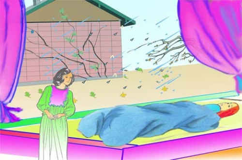

图：娇西说：「等最后一片掉落下来，我也得走了。」
「哟，我从没听到这样荒唐的事，」苏伊假装非常不以为然，辩解说。「老藤叶跟你病的康复有什么相干？你也一向很喜欢那株常春藤，你这淘气的姑娘。别发傻啦。哎呀，医生今天早晨告诉我，你有机会很快就会康复--让我想想，他是怎么说的--他说你痊愈的希望有十分之一！哟，那几乎是一个好机会，跟我们在走纽约搭上街车或者在路走着遇到一幛新盖房子一样的机会。现在喝一点汤吧，让苏伊回去继续画图，好卖给编辑先生，给她的病孩子买点儿红葡萄酒，和猪排给她自己解馋。」
「你不用再买什么酒啦。」娇西说，继续凝视着窗外，「又掉了一片。不，我不要喝汤，只剩四片了。我希望在天黑之前看到最后的藤叶飘下来，那时候我也该去了。」
「亲爱的，娇西，」苏伊弯着身子对她说，「你能不能答应我，将眼睛闭上，一直到我画完之前，都别瞧窗外？那些图画我明天得交。我需要光线，否则我就把窗帘拉下来了。」
「你可不可以到另一间屋子里去画吗？」 娇西冷冷地说。
「我宁可在你的身旁，」苏伊说，「而且我不喜欢你老盯着那些无聊的藤叶。」
「你一画完就告诉我。」娇西闭上眼睛说，她脸色惨白，静静地躺着，活像一尊倒下的塑像，「因为我要看那最后的藤叶掉下来。我等得不耐烦了。也想得不耐烦了。我想摆脱一切，像一片可怜的、厌倦的藤叶，悠悠地往下飘，往下飘。」
「尝试睡觉罢，」苏伊说，“我要去叫贝尔曼上来，当作我那个隐居老矿工的模特儿。我去不了一分种。在我回来之前，千万别动。”
老贝尔曼是住在楼下底层的一个画家。他年纪超过六十，有一把像米开朗基罗摩西雕像上的胡子，像从希腊神话半神半兽酒鬼的头上特别卷曲垂下。贝尔曼是艺术界的失意人。他挥舞了四十年的画笔，连缪思女神衣裙的边缘都没有碰到。他老是说就要画一幅杰作，可是始终没有动手。除了偶尔涂抹了一些商业画或广告画之外，几年没有画过什么。他替此地艺术区那些雇不起职业模特儿的青年艺术家充当模特儿，赚几个小钱。他喝杜松子酒总是过量，还常谈到他未来的杰作。此外，他还是个暴躁的小老头，极端瞧不起温驯的人，却认为自己是保护楼上画室两位青年艺术家的看门狗。
苏伊在楼下那间灯光黯淡的小屋子里找到了满身杜松子酒气的贝尔曼。角落里的画架上商张着一幅空白的画布，它在那儿静候杰作的落笔，已经有了二十五年。她告诉他有关娇西的幻想，又说她如何害怕娇西会这样，的确，她那个虚弱得像暗淡、脆弱般的树叶，当她想念世界的意志逐渐薄弱时，就随风飘逝了。
老贝尔曼红着眼睛眼泪直流，他对这种愚蠢的想法大不以为然，大声咆哮住辱骂。
「什么!」他大叫，「世界上竟然有这种傻子，因为那可恶的长春藤叶落掉而想死？我活了一辈子也没有听到过这种怪事。不，我绝不扮演不出世面、顽固且愚蠢的模特儿。你怎么能让她脑袋里有这种傻念头呢？唉，可怜的小娇西小姐。」
“她病得很厉害，很虚弱，”苏伊说，“发烧使她神智不清，满脑子奇怪的幻想。好，贝尔曼先生，既然你不愿意作我的当模特儿，我也不勉强你了。我想你是可怕老-又老又多嘴的人。”
「你只是一个女人罢了！」贝尔曼嚷道，「谁说我不愿意作模特儿？走吧。我跟你一起去。半个小时之前我就准备好了，愿意替你替你效劳。天哪！像娇西小姐那样好的人实在不应该卧病。总有一天，我要画一幅杰作，那么我们都可以离开这里啦。天哪！是啊。」
当他们上楼时，娇西已经睡着了。苏伊把窗帘拉到窗台上，做手势让贝尔曼到另一间屋子里去。他们担心在那儿可瞥见窗外的常春藤。接着，他们默默无言地互相注视一会儿。寒雨夹带着雪花不停下着。贝尔曼穿着一件蓝色的旧衬衫，扮演一位不出世面的矿工以水壶当作岩石，将水壶翻转坐在上面。
第二天早晨，苏伊睡了一个小时醒来的时候，看到娇西睁着无神的眼睛，凝视着放下的绿窗帘。
「把窗帘拉上去，我要看。」她用微弱的声音命令着。
苏艾虽然不愿意但也照做了。
可是，看哪1经过了漫长夜晚的风吹雨打，仍旧有一片常春藤的叶子贴在砖墙上。它是藤上最后的一片了。靠近叶柄的颜色还是深绿的，但那锯齿状叶片的边缘已染上黄色开始腐败了，它傲然挂在离地面二十来英尺的一根藤枝上面。
「那是最后的一片了，」娇西说，「我以为昨夜它一定会掉落的。我听到刮风的声音。它今天会脱落的，届时我也要死了。」
「亲爱的，亲爱的！」苏伊把她疲倦的脸凑到枕边说，「如果你不为自己着想，也得替我想想呀，我可怎么办呢？」
但是娇西没有回答。一个准备走上神秘遥远旅程的魂灵，是全世界最寂寞的了。当她与尘世和友情之间的联系一片片地被剥离时，她的幻想似乎更为强烈。
那一天总算熬了过去。甚至黄昏时，她们看到墙上那片孤零零的藤叶仍旧依附在茎上。随着夜晚来临北风再度怒号，雨点不断地打在窗上，从荷兰式的低屋檐上滴落下来。
天色刚明的时候，狠心的娇西又吩咐把窗帘拉上去。
那片常春藤叶仍在那儿。
娇西躺着对它看了很久。然后她喊苏伊，苏伊正在瓦斯炉上搅动给琼珊喝的鸡汤。
「我真是一个坏姑娘，苏伊，」娇西说，「冥冥中有什么使那最后的一片叶子不掉下来，启示了我过去是多么邪恶。不想活下去是个罪恶。现在请你拿些汤来，再弄一点掺波特酒的牛奶，再--等一下；先拿一面小镜子给我，用枕头替我垫垫高，我想坐起来看你煮东西。」
一小时后，她说：
“苏伊，我希望有朝一日能去那不勒斯海湾写生。”
下午，医生来，当他离去时，苏伊找了个借口，跑到过道上。
「康复的希望有了五成。」医生握住苏伊瘦小的、颤抖的手说，「只要好好护理，你会胜利。现在我得去楼下看看另一个病人。他叫贝尔曼--据我所知，也是一为画家。也得肺炎。他上了年纪，身体虚弱，病势来得很猛。他可没有希望了，不过今天还是要把他送进医院，让他舒服些。」
第二天，医生对苏伊说；「她脱离险境了，妳们赢了，现在只要营养加上照顾就够啦。」
那天下午，苏伊跑到床边，娇西靠在那儿，心满意足地在织一条毫无用处的深蓝色羊毛披肩，苏伊连枕头一手把她全部抱住。
「我有些话要告诉你，小可爱。」她说，「贝尔曼先生今天在医院得肺炎去世了。他只病了两天，第一天的早上，看门人发现他痛苦无助的躺在他楼下的房间。他的鞋子和衣服都湿透了，冰凉冰凉的。他们想不出，在那种可怕的夜里，他到底去什么地方。后来，他们找到了一盏还燃着的灯笼，一只拖回原地的梯子，还有几只散落的的画笔，一个调色板，上面混着绿色和黄色的颜料，并且—亲爱的，我们从窗户看到的墙上最后一片叶子。你不是觉得怀疑，为什么它被风吹时，竟然不飘也不动？啊，亲爱的，那是贝尔曼的杰作--那天晚上，当最后一片叶子掉落时，他画将它画上去的。」
The Last Leaf by O Henry
In a little district west of Washington Square the streets have run crazy and broken themselves into small strips called "places." These "places" make strange angles and curves. One Street crosses itself a time or two. An artist once discovered a valuable possibility in this street. Suppose a collector with a bill for paints, paper and canvas should, in traversing this route, suddenly meet himself coming back, without a cent having been paid on account!
So, to quaint old Greenwich Village the art people soon came prowling, hunting for north windows and eighteenth-century gables and Dutch attics and low rents. Then they imported some pewter mugs and a chafing dish or two from Sixth Avenue, and became a "colony."
At the top of a squatty, three-story brick Sue and Johnsy had their studio. "Johnsy" was familiar for Joanna. One was from Maine; the other from California. They had met at the table d'hôte of an Eighth Street "Delmonico's," and found their tastes in art, chicory salad and bishop sleeves so congenial that the joint studio resulted.
That was in May. In November a cold, unseen stranger, whom the doctors called Pneumonia, stalked about the colony, touching one here and there with his icy fingers. Over on the east side this ravager strode boldly, smiting his victims by scores, but his feet trod slowly through the maze of the narrow and moss-grown "places."
Mr. Pneumonia was not what you would call a chivalric old gentleman. A mite of a little woman with blood thinned by California zephyrs was hardly fair game for the red-fisted, short-breathed old duffer. But Johnsy he smote; and she lay, scarcely moving, on her painted iron bedstead, looking through the small Dutch window-panes at the blank side of the next brick house.
One morning the busy doctor invited Sue into the hallway with a shaggy, gray eyebrow.
"She has one chance in - let us say, ten," he said, as he shook down the mercury in his clinical thermometer. " And that chance is for her to want to live. This way people have of lining-up on the side of the undertaker makes the entire pharmacopoeia look silly. Your little lady has made up her mind that she's not going to get well. Has she anything on her mind?"
"She - she wanted to paint the Bay of Naples some day." said Sue.
"Paint? - bosh! Has she anything on her mind worth thinking twice - a man for instance?"
"A man?" said Sue, with a jew's-harp twang in her voice. "Is a man worth - but, no, doctor; there is nothing of the kind."
"Well, it is the weakness, then," said the doctor. "I will do all that science, so far as it may filter through my efforts, can accomplish. But whenever my patient begins to count the carriages in her funeral procession I subtract 50 per cent from the curative power of medicines. If you will get her to ask one question about the new winter styles in cloak sleeves I will promise you a one-in-five chance for her, instead of one in ten."
After the doctor had gone Sue went into the workroom and cried a Japanese napkin to a pulp. Then she swaggered into Johnsy's room with her drawing board, whistling ragtime.
Johnsy lay, scarcely making a ripple under the bedclothes, with her face toward the window. Sue stopped whistling, thinking she was asleep.
She arranged her board and began a pen-and-ink drawing to illustrate a magazine story. Young artists must pave their way to Art by drawing pictures for magazine stories that young authors write to pave their way to Literature.
As Sue was sketching a pair of elegant horseshow riding trousers and a monocle of the figure of the hero, an Idaho cowboy, she heard a low sound, several times repeated. She went quickly to the bedside.
Johnsy's eyes were open wide. She was looking out the window and counting - counting backward.
"Twelve," she said, and little later "eleven"; and then "ten," and "nine"; and then "eight" and "seven", almost together.
Sue look solicitously out of the window. What was there to count? There was only a bare, dreary yard to be seen, and the blank side of the brick house twenty feet away. An old, old ivy vine, gnarled and decayed at the roots, climbed half way up the brick wall. The cold breath of autumn had stricken its leaves from the vine until its skeleton branches clung, almost bare, to the crumbling bricks.
"What is it, dear?" asked Sue.
"Six," said Johnsy, in almost a whisper. "They're falling faster now. Three days ago there were almost a hundred. It made my head ache to count them. But now it's easy. There goes another one. There are only five left now."
"Five what, dear? Tell your Sudie."
"Leaves. On the ivy vine. When the last one falls I must go, too. I've known that for three days. Didn't the doctor tell you?"
"Oh, I never heard of such nonsense," complained Sue, with magnificent scorn. "What have old ivy leaves to do with your getting well? And you used to love that vine so, you naughty girl. Don't be a goosey. Why, the doctor told me this morning that your chances for getting well real soon were - let's see exactly what he said - he said the chances were ten to one! Why, that's almost as good a chance as we have in New York when we ride on the street cars or walk past a new building. Try to take some broth now, and let Sudie go back to her drawing, so she can sell the editor man with it, and buy port wine for her sick child, and pork chops for her greedy self."
"You needn't get any more wine," said Johnsy, keeping her eyes fixed out the window. "There goes another. No, I don't want any broth. That leaves just four. I want to see the last one fall before it gets dark. Then I'll go, too."
"Johnsy, dear," said Sue, bending over her, "will you promise me to keep your eyes closed, and not look out the window until I am done working? I must hand those drawings in by to-morrow. I need the light, or I would draw the shade down."
"Couldn't you draw in the other room?" asked Johnsy, coldly.
"I'd rather be here by you," said Sue. "Beside, I don't want you to keep looking at those silly ivy leaves."
"Tell me as soon as you have finished," said Johnsy, closing her eyes, and lying white and still as fallen statue, "because I want to see the last one fall. I'm tired of waiting. I'm tired of thinking. I want to turn loose my hold on everything, and go sailing down, down, just like one of those poor, tired leaves."
"Try to sleep," said Sue. "I must call Behrman up to be my model for the old hermit miner. I'll not be gone a minute. Don't try to move till I come back."
Old Behrman was a painter who lived on the ground floor beneath them. He was past sixty and had a Michael Angelo's Moses beard curling down from the head of a satyr along with the body of an imp. Behrman was a failure in art. Forty years he had wielded the brush without getting near enough to touch the hem of his Mistress's robe. He had been always about to paint a masterpiece, but had never yet begun it. For several years he had painted nothing except now and then a daub in the line of commerce or advertising. He earned a little by serving as a model to those young artists in the colony who could not pay the price of a professional. He drank gin to excess, and still talked of his coming masterpiece. For the rest he was a fierce little old man, who scoffed terribly at softness in any one, and who regarded himself as especial mastiff-in-waiting to protect the two young artists in the studio above.
Sue found Behrman smelling strongly of juniper berries in his dimly lighted den below. In one corner was a blank canvas on an easel that had been waiting there for twenty-five years to receive the first line of the masterpiece. She told him of Johnsy's fancy, and how she feared she would, indeed, light and fragile as a leaf herself, float away, when her slight hold upon the world grew weaker.
Old Behrman, with his red eyes plainly streaming, shouted his contempt and derision for such idiotic imaginings.
"Vass!" he cried. "Is dere people in de world mit der foolishness to die because leafs dey drop off from a confounded vine? I haf not heard of such a thing. No, I will not bose as a model for your fool hermit-dunderhead. Vy do you allow dot silly pusiness to come in der brain of her? Ach, dot poor leetle Miss Yohnsy."
"She is very ill and weak," said Sue, "and the fever has left her mind morbid and full of strange fancies. Very well, Mr. Behrman, if you do not care to pose for me, you needn't. But I think you are a horrid old - old flibbertigibbet."
"You are just like a woman!" yelled Behrman. "Who said I will not bose? Go on. I come mit you. For half an hour I haf peen trying to say dot I am ready to bose. Gott! dis is not any blace in which one so goot as Miss Yohnsy shall lie sick. Some day I vill baint a masterpiece, and ve shall all go away. Gott! yes."
Johnsy was sleeping when they went upstairs. Sue pulled the shade down to the window-sill, and motioned Behrman into the other room. In there they peered out the window fearfully at the ivy vine. Then they looked at each other for a moment without speaking. A persistent, cold rain was falling, mingled with snow. Behrman, in his old blue shirt, took his seat as the hermit miner on an upturned kettle for a rock.
When Sue awoke from an hour's sleep the next morning she found Johnsy with dull, wide-open eyes staring at the drawn green shade.
"Pull it up; I want to see," she ordered, in a whisper.
Wearily Sue obeyed.
But, lo! after the beating rain and fierce gusts of wind that had endured through the livelong night, there yet stood out against the brick wall one ivy leaf. It was the last one on the vine. Still dark green near its stem, with its serrated edges tinted with the yellow of dissolution and decay, it hung bravely from the branch some twenty feet above the ground.
"It is the last one," said Johnsy. "I thought it would surely fall during the night. I heard the wind. It will fall to-day, and I shall die at the same time."
"Dear, dear!" said Sue, leaning her worn face down to the pillow, "think of me, if you won't think of yourself. What would I do?"
But Johnsy did not answer. The lonesomest thing in all the world is a soul when it is making ready to go on its mysterious, far journey. The fancy seemed to possess her more strongly as one by one the ties that bound her to friendship and to earth were loosed.
The day wore away, and even through the twilight they could see the lone ivy leaf clinging to its stem against the wall. And then, with the coming of the night the north wind was again loosed, while the rain still beat against the windows and pattered down from the low Dutch eaves.
When it was light enough Johnsy, the merciless, commanded that the shade be raised.
The ivy leaf was still there.
Johnsy lay for a long time looking at it. And then she called to Sue, who was stirring her chicken broth over the gas stove.
"I've been a bad girl, Sudie," said Johnsy. "Something has made that last leaf stay there to show me how wicked I was. It is a sin to want to die. You may bring a me a little broth now, and some milk with a little port in it, and - no; bring me a hand-mirror first, and then pack some pillows about me, and I will sit up and watch you cook."
And hour later she said:
"Sudie, some day I hope to paint the Bay of Naples."
The doctor came in the afternoon, and Sue had an excuse to go into the hallway as he left.
"Even chances," said the doctor, taking Sue's thin, shaking hand in his. "With good nursing you'll win." And now I must see another case I have downstairs. Behrman, his name is - some kind of an artist, I believe. Pneumonia, too. He is an old, weak man, and the attack is acute. There is no hope for him; but he goes to the hospital to-day to be made more comfortable."
The next day the doctor said to Sue: "She's out of danger. You won. Nutrition and care now - that's all."
And that afternoon Sue came to the bed where Johnsy lay, contentedly knitting a very blue and very useless woollen shoulder scarf, and put one arm around her, pillows and all.
"I have something to tell you, white mouse," she said. "Mr. Behrman died of pneumonia to-day in the hospital. He was ill only two days. The janitor found him the morning of the first day in his room downstairs helpless with pain. His shoes and clothing were wet through and icy cold. They couldn't imagine where he had been on such a dreadful night. And then they found a lantern, still lighted, and a ladder that had been dragged from its place, and some scattered brushes, and a palette with green and yellow colors mixed on it, and - look out the window, dear, at the last ivy leaf on the wall. Didn't you wonder why it never fluttered or moved when the wind blew? Ah, darling, it's Behrman's masterpiece - he painted it there the night that the last leaf fell."